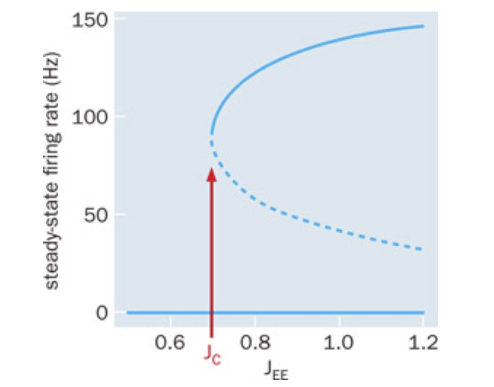
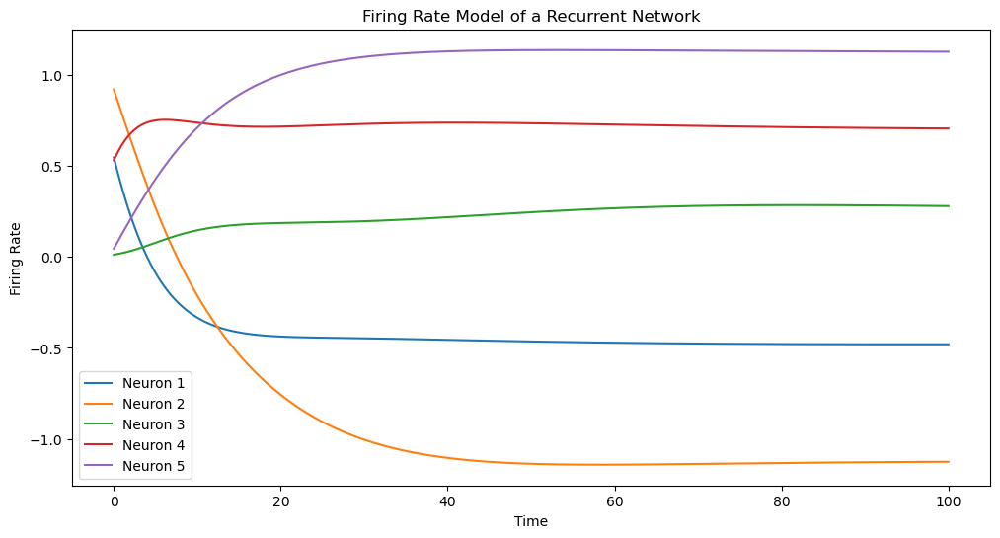
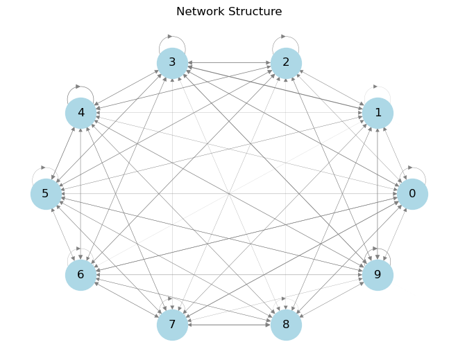
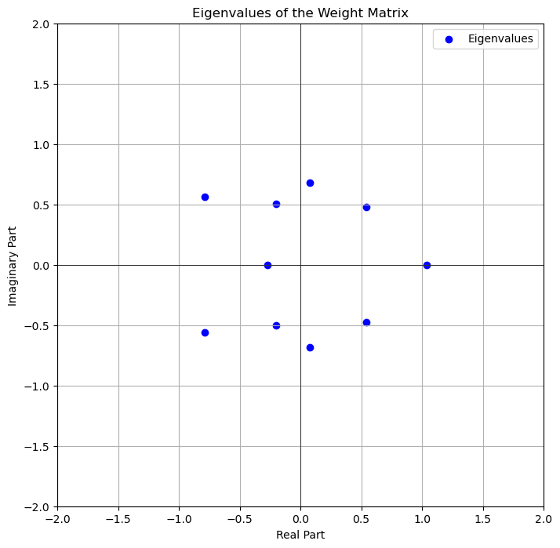

2. Firing Rate model#
A simplification of the spiking neurons is the Firing rate model. When using this model for neurons, the network is called a rate based network or a rate based model. The firing rate of a neuron, or a group of neurons, \(r_i\), is modeled according to a simple differential equation, with the input-output function \(f_i\):
the \(\tau_i\) is the time constant of the change in firing rate. The input to the input-output function, \(I_i\), is all the input that to neuron \(i\). The benefit of the firing rate model is that it is a continuous variable, in contrast to spiking models, like the leaky integrate and fire model (LIF). Most neurons have a threshold, where if the input is lower then there is no spikes, hence the firing rate would be zero, or poorly defined. Therefore, the firing rate model would be a better representation of a group of neurons, rather than representing a single neuron. Hence, the firing rate \(r_i\) can also be interpreted as a group of neurons behaving in a similar fashion.
Note that if the firing rate is in steady state, i.e. if
then the firing rate is equal to the input-output function:
However, this requires that the input \(I_i\) is constant over a longer time than the time constant of the firing rate, \(\tau_i\).
3. Recurrent network: Simple rate based network#
Reverberating activity in a local recurrent network, has been proposed as a mechanism for memory. At least it is a mechanisms for producing persistent spiking activity. Such network often has at least two stable states, hence called a bistable network. Some external event can then put the network either in one or the other state, and in this way represent a memory of that external event. We can model this as a rate based network as described above, but where the input in the input output function is the output of the system itself, hence a recurrent network. This can then be modeled using a single differential equation:
where \(\tau_E\) is the firing rate time constant of the network with the subscript E to emphasize that it is an excitatory recurrent network. The \(r_E\) is the population firing rate of the network. \(J_{EE}\) is the synaptic strength of the feedback connections, hence the subscript EE. \(I_{ext}\) is some external common drive. \(F\) is the neuronal input output function given the input, \(I\). Usually this is sigmoidally shaped with some threshold. The steady-state solution is represented by \(\frac{dr_E}{dt}=0\) where \(r_E= F(I)\). The firing rate is zero when \(I<I_c\) where \(I_c\) is the critical value for \(F(I)\) being larger than zero. What is the criterion for having non-zero firing rate when the external drive is zero? Then $\( r_E=F(J_{EE}r_E) \)$
which may or may not be solvable depending on what the function \(F\) is. Nevertheless, we can plot the right and left hand side of the equation and do a graphical solution, i.e. look for when those two plots intersect (equal to each other). Below is shown the blue curve, which is the instantaneous output firing rate \(r_E\) being exactly equal to the input of the neurons. The orange shows the steady state firing rate \(F(I)\) where \(I\) is the synaptic coupling times the firing rate, \(I=J_{EE}r_E\)

When the synaptic strength is below a certain value, a critical coupling \(J_c\), the input is not strong enough to keep sustained activity. The steady state firing rate is therefore zero, which is also the only intersection between the two curves (blue dot).
When the synaptic strength of the feedback coupling increases to the critical value (\(J_{EE}=J_c\)) the two curves have a second intersection, which is around \(r_E=100\) Hz (see open circle in below figure).

Increasing the synaptic coupling further, which is equivalent to moving the orange curve to the left, the intersection at 100 Hz slits up into two intersections. Hence, this results in total of three intersections, which represents three solutions to the equation, i.e. three firing rates \(r_1\), \(r_2\) and \(r_3\) (see below figure).

These three solutions are not all stable. It turns out that only the solution at zero and around 150 Hz are stable. The solution in the middle is unstable, indicated by the open circle. The instability of the middle solution can be verified by introducing a little increase or decrease away from the solution, also known as a pertubation. If we are slightly above the point, the orange curve is above the input rate (blue), which means that when this larger firing rate is fed back into the network, it will result in an even larger firing rate. In other words, a small increace will keep growing away from the point, hence the solution is unstable. The opposite is the case for the right most solution: any increase in firing rate will result in a slightly smaller feedback input, hence the activity will decay back to the point.
4. Bifurcation: a qualitative and abrupt change in dynamics when changing a parameter#
The system that we have just described has gone through what is called a bifurcation in dynamics. A bifurcation represents a qualitative and abrupt change in dynamics when changing a parameter. Here, the parameter is the synaptic strength, \(J_{EE}\). The qualitative change is that the system goes from having one solution to having three. Further, the change is abrupt: the change come suddenly. It is not a continuous change. Bifurcations are often visualized with a bifurcation diagram, where the stable and unstable solutions are plotted on the y-axis and the x-axis has the parameter, which causes the birfurcation, see figure below.


The solid lines represent the stable solutions, and the broken line represents the unstable solution. Note that \(r_E=0\) remains a stable solution for all values.
Hence, the system becomes a bistable system after the synaptic strength has increased over the critical value. That means the network can function as a memory device, where a brief external input can put the system either in the active or silent state.
5. Example of a Random network#
Here, we model a recurrent network with input and output of individual neurons.
The code below provides a basic illustration of how firing rates might evolve in a random recurrent neural network. The external input \(J\) also has some randomness. We use the following function The input output function is modelled as:
such that we have a system of differential equations, written in compact vector and matrix notation:
where \(r\) is a vector with the neuronal firing rates, \(w\) is the connectivity matrix, and \(J\) is the external drive.
The active part of the input output function is here modeled as a sigmoidal function called hyperbolic tanget:
which is a sigmoidal input output function commonly used in recurrent neural networks. You can modify the parameters and the structure of the network to explore different dynamics.
import numpy as np
import matplotlib.pyplot as plt
from scipy.integrate import odeint
# Define the firing rate model
def firing_rate_model(y, t, tau, w, J):
# y represents the firing rates of the neurons
# Define the differential equation
dy_dt = (-y + np.dot(w, np.tanh(y)) + J) / tau
return dy_dt
# Parameters
N = 100 # Number of neurons
tau = 10.0 # Time constant
w = np.random.randn(N, N) / np.sqrt(N) # Recurrent weight matrix
J = np.random.randn(N) # External input current
# Initial conditions
y0 = np.random.rand(N)
# Time points
t = np.linspace(0, 100, 1000)
# Solve the differential equation
solution = odeint(firing_rate_model, y0, t, args=(tau, w, J))
# Plot the results
plt.figure(figsize=(12, 6))
for i in range(min(5, N)): # Plot the first 5 neurons to avoid clutter
plt.plot(t, solution[:, i], label=f'Neuron {i+1}')
plt.xlabel('Time')
plt.ylabel('Firing Rate')
plt.title('Firing Rate Model of a Recurrent Network')
plt.legend()
plt.show()

6. Exercise:#
Try changing the different parameters.
Instead of plotting firing rates against time, try plotting the firing rate of one neuron against another
Think about what the eigenvalues of the system is. Is the system stable or unstable? What would constitute an unstable network?
Is this a linear or nonlinear system?
7. Illustrating the network structure#
import numpy as np
import matplotlib.pyplot as plt
import networkx as nx
# Parameters
N = 10 # Number of neurons - making it smaller than the above network for illustrative purposes.
w = np.random.randn(N, N) / np.sqrt(N) # Recurrent weight matrix
# Create a directed graph
G = nx.DiGraph()
# Add nodes and edges based on the weight matrix
for i in range(N):
for j in range(N):
if w[i, j] != 0: # If there is a connection
G.add_edge(i, j, weight=w[i, j])
# Draw the network
pos = nx.circular_layout(G) # Positions for all nodes
nx.draw(G, pos, with_labels=True, node_color='lightblue', node_size=1000,
edge_color='gray', width=[abs(w[i][j]) for i, j in G.edges()])
plt.title('Network Structure')
plt.show()

8. Exercise:#
Try changing the size of the network
9. Linear stability analysis of rate based network#
The question is: Can we use the tools we learned in chapter 2.3 (Two dimensional linear systems: Eigenvalues, eigenvectors and solutions) to help us predict and understand the network behavior os the above network? Let us look again at the system that was written as coupled differential equations in compact vector and matrix notation:
where \(r\) is a vector with the neuronal firing rates, \(w\) is the connectivity matrix, and \(J\) is the external drive. The tanh-function is a non-linear function, so we cannot directly apply the linear stability analysis. Nevertheless, we can look at the activity close to zero, where the tanh-function is approximately linear. Hence, we can perform the approximation:
which is valid if \(r\) is close to 0. Hence, we can rewrite the equations as:
and rearrange to the following eqution:
assuming \(J=0\) for now. When redefining the parameters we get: $\( \frac{dr}{dt}= Ar \)$
where \(A=\frac{1}{\tau}(w - I)\), which we call the effective connectivity matrix. This is in fact identical to the \(\dot X = AX\) that we discussed in chapter 2. We found that the eigenvectors and eigenvalues of this equation is important for predicting the stability of the network. Please recall that the eigenvalues \(\lambda\) and eigenvectors \(r\) of A are found from the equation:
Hence, it is very helpful to look at the eigenvalues of the effective connectivity matrix, A. Since A is proportional to w (divided by \(\tau\) ) and subtracted by a constant (the identity matrix I), we may as well look at the eigenspectrum of w itself. Keep in mind that the eigenvalues can be complex. There is an eigenvalue for every equation. Below we find all the eigenvalues plotted in a spectrum of eigenvalues.
import numpy as np
import matplotlib.pyplot as plt
# Parameters
N = 10 # Number of neurons
w = np.random.randn(N, N) / np.sqrt(N) # Recurrent weight matrix
# Calculate the eigenvalues of the weight matrix w
eigenvalues = np.linalg.eigvals(w)
# Plot the eigenvalues on the complex plane
plt.figure(figsize=(8, 8))
plt.scatter(np.real(eigenvalues), np.imag(eigenvalues), color='blue', label='Eigenvalues')
plt.axvline(0, color='black', linewidth=0.5)
plt.axhline(0, color='black', linewidth=0.5)
plt.title('Eigenvalues of the Weight Matrix')
plt.xlabel('Real Part')
plt.ylabel('Imaginary Part')
plt.grid(True)
plt.legend()
plt.xlim(-2, 2)
plt.ylim(-2, 2)
plt.show()

9.1. Exercise:#
From the eigenvalue spectrum consider whether the system is stable or unstable. Explain why.
Does the system oscillate?
What could change the eigenvalue spectrum and hence the stability/instability of the system?
try to make those changes and see the effect in dynamics and in the eigenvalue spectrum